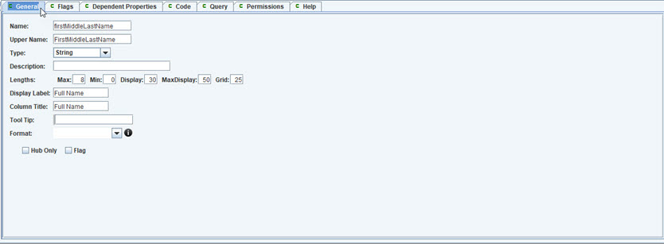
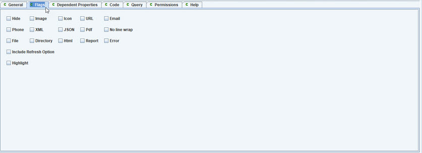
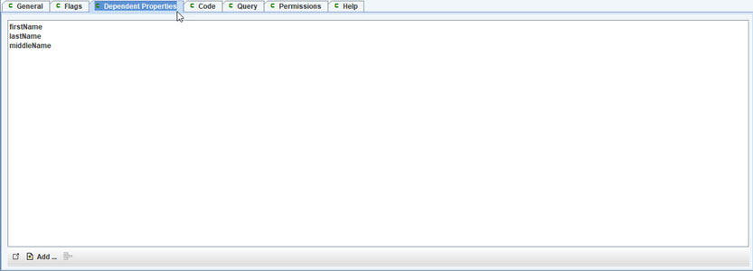
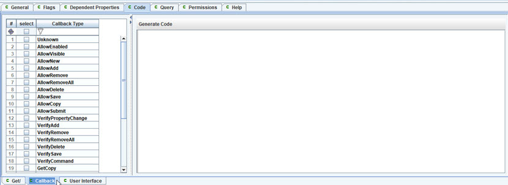
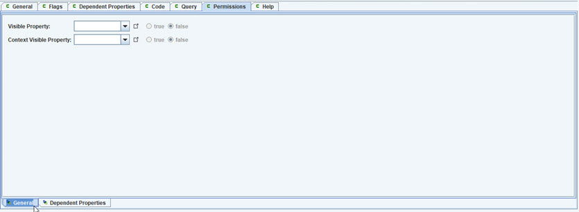

Code tab, User Interface subtab.
A calculated property is like a formula on a spreadsheet, where it is always up to date, by recalculating whenever anything changes that affects its value. With calculated properties, this is taken further to allow it for anywhere in the model,
General information.
Properties used by this Calculated Property. If one of these is changed,
then the calc prop can be recalculated.
List of properties that are used for the Calculation.
Selecting "Add" button command will display the
select property dialog window (display next).
Code that is added to generated code when the program
is created.
Editor tab showing Calulated Property.

General tab.

Flags tab. List of flags to describe the calc property.

Dependent Properties tab. List of property paths that are used by
this calc property.
Code tab, Get subtab.

Code tab, Callback subtab.
Code tab, User Interface subtab.
Query tab, for query used to select from datasource.

Permissions tab.
Permissions tab, additional dependent properties.

Help tab.